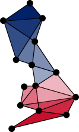
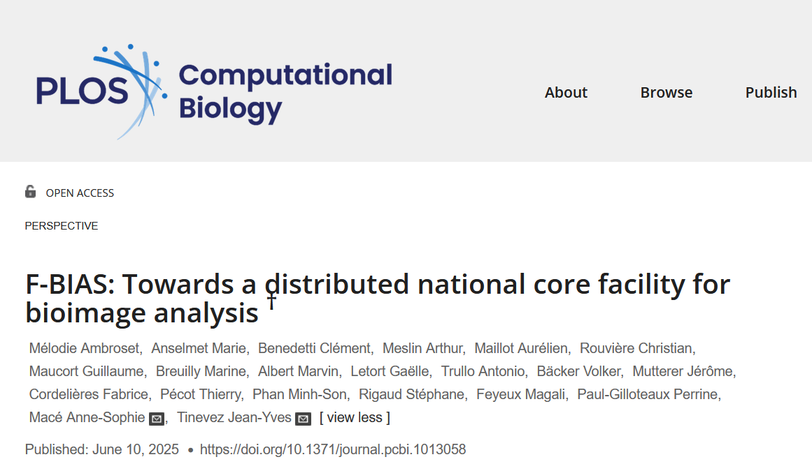
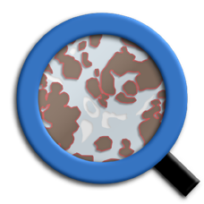
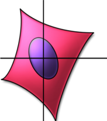
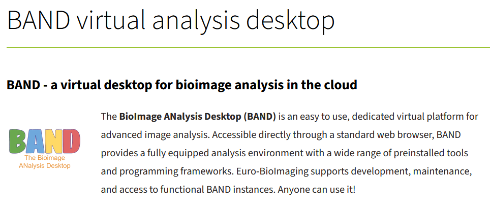
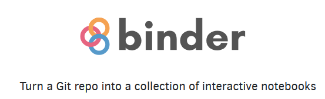

Introducing UK-BIAS
The UK Network of BioImage Analysts

Why UK-BIAS?
Analysis of microscopy images is a major bottleneck.



The UK Network of BioImage Analysts to the rescue!
Who are we?
A distributed team of analysis experts from across the UK.
What do we do?
From consultation to bespoke, reproducible pipelines, built on open-source tools you already use:


Where will we do it?
A virtual, distributed service running on shared compute platforms:


How do we work?
A typical project runs in three stages:
- Initial Consultation
- Pilot Project Proposal
- Scope Longer Term Collaboration
How do we work?
Our guiding principles:
- All outputs open-source and FAIR
- Projects prioritised based on...
- Feasibility
- Duration
- Reproducibility
- Co-authorship expected where we contribute substantially
How can you work with us?
Get in touch!
Scan the code or visit uk-bias.github.io/UK-BIAS